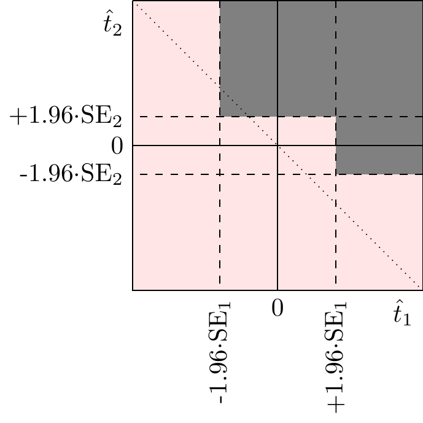
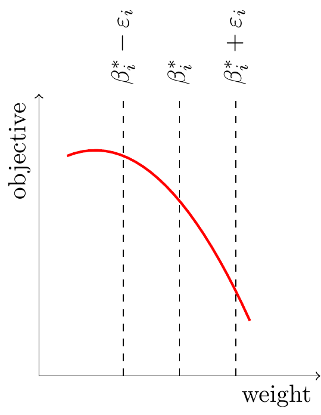

==Still a draft, don’t circulate!==
Introduction
I describe a canonical experimentation situation and give recommendations for four common problems using common Bayesian framework:
The impetus for writing this up was Netflix’s 2023 CIDER conference, many thanks to all participants especially Martin Tingley.
Setup: The canonical tech problem is to choose a policy to maximize long-run user retention. Because the policy space is high-dimensional it’s not feasible to run experiments on every alternative (there are trillions), instead most of the decision-making is done with human intuition based on observational data, and experiments are run to confirm those intuitions.
The inference problem. The basic problem of experimentation is to estimate the true effect given the observed effect. The problem can become complicated when we have a set of different observed effects, e.g. across experiments, across metrics, across subgroups, or across time.
A common approach to dealing with multiple estimands is to adjust confidence intervals (e.g. Bonferroni, always-valid). However I think a better approach is to let decision-makers make qualitative judgments but provide them with an informative set of benchmark statistics so they can compare the results of any given experiment to the results from a reference group.
The extrapolation problem. Given an effect on metric A what’s our best estimate of the effect on metric B? This problem is common to observational inference, proximal goals, and extrapolation.
There are three approaches to solving this: (1) using raw priors; (2) using correlation across units (surrogacy); (3) using correlation across experiments (meta-analysis). I argue that approach #3 is generally the best option but reasonable care needs to be taken in interpreting the results.
The explore-exploit problem. We would like to choose which experiments to run in an efficient and automated way. I think the technical solution is relatively clear but tech companies have struggled to implement it because good execution requires some discipline. I describe a simple algorithm that is not optimal but very simple and robust.
The culture problem. Inside tech companies people keep misusing experiments and misinterpreting the results, especially (1) running under-powered experiments, (2) selectively choosing results, and (3) looking at correlations without thinking about identification. A common response is to restrict access so that only datapoints satisfying some conditions are made available. However this often backfires because (a) it is difficult to formally specify the right conditions; (b) it reinforces a perception that experimental results can be interpreted as best-estimates of true treatment effects; (c) it reinforces a norm of selecting experimental results as arguments for a desired outcome.
Setup
Firms choose their policy to maximize user retention. As a simplified model companies are choosing policies to maximize long-run retention (or revenue). A policy is, for example, a recommendation algorithm, or notification algorithm, or the text and images used in an advertisement or the UX on a signup page. Notice that policies are very high dimensional: there are millions or billions of alternatives, while we usually run only a few experiments.1
1 In fact variation in the success of tech platforms is primarily due to variation in the inflow of new users, not due to variation in retention rates. However growth in new users is driven by the attractiveness of the product and retention is a good proxy for this.
Experiments are not the primary source of causal knowledge. People already have substantial knowledge about the effects of their decisions without either randomized experiments or natural experiments (IV, RDD, etc.). We built cathedrals, aeroplanes, welfare states, we doubled human life-expectancy, & WhatsApp grew to 1B users, all without randomized experiments. Formal causal inference augments our already substantial causal knowledge. Inside companies the primary way people learn about causal relationships is raw data (e.g. dashboards) and common-sense reasoning about human behaviour.
Experiments only solve the low-dimensional problem. In most cases the dimensionality of the policy space is far higher than the dimensionality of experiment space, thus the responsibility for choosing policies is primarily human judgment, and then humans give a few variants to experiments to compare their performance.
Most questions related to experiments can be expressed as conditional expectations. A good workhorse model of experimentation is the following, suppose we have two metrics #1 and #2. Taking some set of experiments we can think of three joint distributions: the observed effects, the true effects, and the noise:2
2 For simplicitly assume the experiment doesn’t have any effect on variances or covariances of outcomes, the effects are typically small enough that it doesn’t matter.
\[\utt{\binom{\hat{t}_1}{\hat{t}_2}}{observed}{effects} =\utt{\binom{t_1}{t_2}}{true}{effects (ATE)} +\ut{\binom{e_1}{e_2}}{noise} \]
For simplicity we’ll assume everything is normally distributed and has mean zero, then we get two very simple expressions for conditional expectations, and I’ll argue that these conditional expectations serve as answers to almost all interesting experimentation questions:
\[\begin{aligned} E[t_1|\hat{t}_1] &= \utt{\frac{\sigma_{t1}^2}{\sigma_{t1}^2+\sigma_{e1}^2}}{signal-noise}{ratio}\hat{t}_1 && \text{(posterior estimate of treatment effect, AKA shrinkage)} \\ E[t_2|\hat{t}_1] &= \utt{\rho_{t}\frac{\sigma_{t2}}{\sigma_{t1}}}{covariance}{of $t_1$ and $t_2$} \utt{\frac{\sigma_{t1}^2}{\sigma_{t1}^2+\sigma_{e1}^2}}{signal-noise}{ratio of $\hat{t}_1$}\hat{t}_1 && \text{(true effect on metric 2 given observed effect on metric 1)} \end{aligned} \]
The Inference Problem
There are a number of experiment inference problems that we often find difficult. We will discuss these as pure inference problems without worrying about strategic behaviour (e.g. peeking, cherry-picking).
- Estimate the treatment effect given the observed treatment effect.
- Estimate the long-run treatment effect knowing the short-run observed effect.
- Estimate the treatment effect, knowing the observed effect, and additionally the distribution of observed effects across some set of experiments.
- Estimate the treatment effect on a subgroup, knowing the observed effect, and additionally the distribution of observed effects across all other subgroups.
The textbook approach uses p-values. A common “textbook” understanding approach is to use the observed effect as your estimate if the p-value is below 0.05, and otherwise to use zero as your estimate. This approach leads to all sorts of well-known problems.
Alternative recommendation: report benchmark statistics. The ideal decision process lets humans make a judgment about estimated treatment effects given three ingredients:
Raw estimate. The point estimate and standard error.3
Benchmark statistic. We should also report a statistic comparing this observed effect to observed effects of other similar treatments. There are many ways of benchmarking and I think they are all convey the same basic information, e.g. the empirical-bayes shrunk estimate (and there are various shrinkage estimators), the FDR-adjusted p-value, or the fraction of statistically significant experiments. We have to use judgment in defining what a “similar” experiment is, and it’s important that we report to the end-user what class of similar experiments we’re using and how many we have. For the remainder of the section I will assume we are reporting an empirical-bayes shrunk estimate.
Idiosyncratic details. Any information about this treatment relative to the benchmark class, that could be relevant to its effect on this metric. E.g. if this experiment only affects iPhone users and the metric is an Android outcome this is informative, and we should probably ignore an effect unless it is highly significant.
3 Equivalently, the point-estimate and p-value, or the upper and lower confidence bounds.
Benchmarking solves all the problems above. An empirical-Bayes shrunk estimate represents our best guess at the true treatment effect conditional on the experiment being drawn from a given reference class.
Useful shortcut: using the fraction of significant experiments to do shrinkage. A convenient rule of thumb for doing empirical Bayes shrinkage is to use the fraction of experiments that are statistically significant in some class. If the fraction is zero then we should shrink all estimates to zero, if the fraction is 20% then we should shrink estimates by about 50%, and if the fraction is 1/2 then we should shrink estimates by about 20%. If everything’s Gaussian and every experiment has the same \(N\) then the optimal shrinkage factor is \(1-(\frac{1}{1.96}\Phi^{-1}(\frac{q}{2}))^2\), where \(q\) is the fraction of stat-sig experiments.
Strategic Problems [UNFINISHED]
There are additionally some strategic problems in experiment interpretation.
- Strategic stopping. Engineers will wait until an experiment has a high estimated impact (or low p-value) and then try to launch it.
- Cherry-picking. An engineer will cherry-pick results that support their preferred decision, e.g. Indian DAU went up.
- Alert thresholds. We want to stop an experiment early if it has either a very good or very bad outcome, but it’s difficult to know how to set the threshold in a principled way.
[UNFINISHED: frequentist vs Bayesian approach to strategic problems]
On Launch Criteria
Choosing weights on metrics for a launch decisions involves many considerations: network effects, noise, cross-metric proxy effects, and dynamic effects. To make clear decisions it’s important to peel apart these layers, I recommend these steps:
Choose a set of final metrics. These are the metrics we would care about if we had perfect knowledge of the experimental effect. We can define tradeoffs between them, it’s convenient to express those tradeoffs in terms of percentage changes, e.g. we might be indifferent between 1% DAU, 2% time/DAU, and 5% prevalence of bad content.4
Choose a set of proximal metrics. These are the metrics on which we are confident we can detect our experiment’s effect, meaning the measured impact will be close to the true impact on these metrics (i.e. has a high signal-noise ratio). To determine whether a metric is moved we can use the fraction of a given class of experiments that have a statistically-significant effect on that metric: if the share is greater than 50% then we can be confident that the estimated effect is close to the true effect.
Identify conversion factors between proximal and final metrics. These tell us the best-estimate impact on final metrics given the impact on proximal metrics. Conversion factors can be estimated either from (a) long-running tuning experiments; (b) a meta-analysis of prior experiments with similar designs.
4 Arguably revenue or profit is a more truly final metric, and these are just proxies, but these are probably close enough to final for most purposes.
The Extrapolation Problem
Many problems are predicting the effect one one metric (downstream) given the effect on another metric (upstream). There are a variety of situations in which we cannot measure the effect on the downstream metric, either because it has high noise, or it is in the future:
| upstream | downstream |
|---|---|
| short-run revenue | long-run revenue |
| click | purchase |
| engagement on content | response to survey (“do you like this content?”) |
| engagement on content | retention |
| exposure to content | retention |
| time on surface X | time on all surfaces |
| purchase | repeat purchase |
| wait-time for delivery | retention |
| price | quantity purchased |
For concreteness we will treat the problem of predicting the long-run (LR) effect of an experiment on DAU from its short-run (SR) estimated effects on all metrics:
\[E[\utt{\Delta\text{DAU}_{LR}}{true long-run}{effect on DAU} | \utt{\Delta \widehat{\text{DAU}}_{SR}, \ldots, \Delta\widehat{\text{engagement}}_{SR}}{estimated short-run effects}{}]\]
There are two obvious ways to calculate this:
Meta-analysis. We can run a regression across prior experiments: \[\Delta\widehat{\text{DAU}}_{LR} \sim \Delta \widehat{\text{DAU}}_{SR} + \ldots + \Delta\widehat{\text{engagement}}_{SR}\]
However the coefficients will be biased if we use on the LHS the observed long-run DAU, instead of the true long-run DAU. This bias is often large, and in fact if you run a bunch of AA tests (where the causal effect is zero) you’ll find strong significant relationships between short-run and long-run impacts. I discuss below ways in which to adjust for this bias.
Observational Inference. We can run a regression across users: \[\text{DAU}_{LR} \sim \text{DAU}_{SR} + \ldots + \text{engagement}_{SR}\]
We can look at what is most predictive of long-run DAU across users. The problem here is obviously endogeneity, and so it’s worth spending time drawing a DAG and running robustness tests to carefully think through the sources of variation we’re using.
With Meta-Analysis
With \(n\) metrics we can write the underlying model as: \[\utt{\pmatrix{\hat{t}_1\\\vdots\\\hat{t}_n}}{observed}{effects} = \utt{\pmatrix{t_1\\\vdots\\t_n}}{true}{effects} +\utt{\pmatrix{e_1\\\vdots\\e_n}}{noise}{(=user variation)}\]
Here we are treating \(\Delta \text{DAU}_{SR}\) and \(\Delta \text{DAU}_{LR}\) as two different metrics, but for some experiments we only observe the first. We thus want to estimate the effect on long-run retention (DAU\(_{LR}\)) given short-run metrics. \[E[\Delta\text{DAU}_{LR} | \Delta \widehat{\text{DAU}}_{SR}, \ldots, \Delta\widehat{\text{engagement}}_{SR}]\]
where \[\begin{aligned} \Delta\text{DAU}_{LR} &= \textit{true}\text{ effect on long-run daily active users (AKA retention)}\\ \Delta\widehat{\text{DAU}}_{SR} &= \textit{estimated}\text{ effect on short-run daily active users} \\ \Delta\widehat{\text{engagement}}_{SR} &= \textit{estimated}\text{ effect on short-run engagement} \end{aligned}\]
Running a Regression will be Biased. The obvious thing to do is run a regression across experiments: \[\Delta\widehat{\text{DAU}}_{LR} \sim \Delta \widehat{\text{DAU}}_{SR} + \ldots + \Delta\widehat{\text{engagement}}_{SR}\]
However this will be biased. The simplest way to demonstrate the bias is to show that even with AA tests (where there is zero treatment effect on either metric) we will still get a strong predictive relationship between the observed treatment effects on each of the two metrics:

The bias is because in the regression our LHS variable is estimated retention (\(\Delta\widehat{\text{DAU}}_{LR}\) instead of \(\Delta\text{DAU}_{LR}\)), and the noise in that estimate will be correlated with the noise in the estimates of short-run metrics. In the linear bivariate case (where we have just one RHS variable) then we can write: \[\begin{aligned} \ut{\frac{cov(\hat{t}_2,\hat{t}_1)}{var(\hat{t}_1)}}{regression} = \utt{\frac{cov(t_2,\hat{t}_1)}{var(\hat{t_1})}}{what we}{want to know} + \ut{\frac{cov(e_2,e_1)}{var(\hat{t}_1)}}{bias} \end{aligned}\]
The bias will be small if the short-run metrics have high signal-noise ratios (SNR), \(\frac{var(t_1)}{var(e_1)}\gg 0\). A simple test for SNR ratio is the distribution of p-values: if most experiments are significant then the SNR is high. However in the typical case (1) \(\Delta \widehat{\text{DAU}}_{SR}\) is the best predictor of \(\Delta \widehat{\text{DAU}}_{LR}\); and (2) \(\Delta \widehat{\text{DAU}}_{SR}\) has a low signal-noise ratio (i.e. few outcomes are stat-sig). This means the results are hard to interpret, the bias is large.
Adjusting for the Bias
Here are some alternatives:
Run a regression just using the high-SNR metrics. We could just drop \(\Delta\widehat{\text{DAU}}_{SR}\) as a regressor because of the bias. But in practice we lose a predictive power (\(R^2\)), so it’s hard to know when this will be a good idea without an explicit model.
Adjust for bias in linear estimator. If we want a linear estimator then we can estimate and adjust for the bias. \[\begin{aligned} \utt{\frac{cov(t_2,\hat{t}_1)}{var(\hat{t_1})}}{BLUE for}{$t_2$ given $\hat{t}_1$} &= \frac{cov(t_2,t_1)}{var(\hat{t}_1)} = \ut{\frac{cov(\hat{t}_2,\hat{t}_1)}{var(\hat{t}_1)}}{regression result} - \utt{\frac{cov(e_2,e_1)}{var(\hat{t}_1)}}{observable}{variables} \end{aligned}\]
If everything is joint normal then the expectation is itself linear, and so this will be optimal. In practice the true distribution of effect-sizes is somewhat fat-tailed, which imply that the conditional expectation will be nonlinear in the observables. Nevertheless I think this is a good start. (One other complication is that the SNR is more complicated to calculate when experiments vary in their sample size).6
Use experiment splitting. You can randomly assign users in each experiment to one or other sub-experiments. You now effectively have a set of pairs of experiments, each of which has experiments with identical treatment effects (\(\Delta \text{DAU}_{LR}\)) but independent noise. Thus you can run a regression with LHS from one split, and RHS from other split, and you’ll get an unbiased estimate. Additionally you can easily fit a nonlinear model.
Run a regression just using the strongest experiments. If the distribution of experiments is fat-tailed then the strongest experiments will have higher SNR, and so lower bias. A worry about this is that you’re only estimating the relationship from outliers, so if there are nonlinearities you’ll never know. At the same time the assumption of fat-tailed treatment-effects gives reason to believe the expectation will be nonlinear. (This is roughly how I interpret the Peysakhovich and Eckles (2018) experiments-as-instruments paper. They propose using L0 regularization and experiment-splitting cross-validations, which I think effectively just selects the strongest experiments.)
6 For derivation see Cunningham and Kim (2020).
Choosing a Reference Class. It is important to think about the reference-class of experiments which we use to calibrate our estimates. The long-run DAU prediction can be though of as an empirical-bayes estimate, which is our best estimate conditional on the experiment being a random draw from this class of experiments.
In many cases a company’s experiments will naturally fall into different classes: e.g. some have a very steep relationship between engagement and DAU, others have a very flat. It’s important to both (1) visualize all the experiments, so that a reference-class can be chosen sensibly; (2) calculate the \(R^2\) across experiments, so we can have some sense of confidence in our extrapolation.
Observational Inference
What we want to know: Given the short-run effect of a content experiment on engagement we want to predict the long-run effect on DAU. We can start with a simple regression along these lines: \[\utt{\text{DAU}_{u,t+1}}{long-run}{retention} \sim \utt{\text{engagement}_{u,t}}{short-run}{engagement}\]
We could set up a DAG and discuss the surrogacy conditions. The condition are that (1) all effects of an experiment on DAU are via short-run engagement; and (2) there is no unobserved factor which affects both SR engagement and LR DAU:
\[\xymatrix{ & *+[F-:<6pt>]\txt{unobserved}\ar@{.>}[d] \ar@{.>}[dr] \\ *+[F]{\text{experiment}} \ar[r] \ar@{.>}@/_1pc/[rr] & *+[F]{\text{SR engagement}}\ar[r] & *+[F]{\text{LR DAU}} }\]
In fact we know that engagement doesn’t literally lie on the causal chain, instead we think engagement is a good proxy for content which might lie on the causal chain.
In any case I find the following setup an easier way to think about the assumptions necessary for identification:
We can write it out a simple structural model as follows (for compactness I leave out coefficients):
\[\begin{array}{rcccccccc} \text{engagement}_{u,t} &=& \utt{\text{temperament}_{u}}{user-specific}{propensity to engage} &+& \utt{\text{mood}_{u,t}}{time-varying}{mood/holiday/etc.} &+& \utt{\text{content}_{u,t}}{content seen}{on platform} &+& \utt{\text{distractions}_{u,t}}{other platform effects}{e.g. messages, notifs}\\ \text{DAU}_{u,t} &=& \text{temperament}_{u} &+&\text{mood}_{u,t} &+&\utt{\sum_{s=1}^\infty\beta^s\text{content}_{u,t-s}}{prior experience}{w content} &+&\text{distractions}_{u,t}\\ \end{array}\]
Some general observations:
- We would get a more credible estimate if we could directly measure content quality. E.g. if we could use the quality of the content available to the user on the RHS, instead of just their engagement on that content. This wouldn’t get perfect identification but it would help.
- The relative shares of variation in the RHS is important. If most of the variation in engagement is due to variation in content (i.e. high \(R^2\) from content), then we don’t need to worry much about confounding from other effects. We can think of introducing control variables as a way of increasing the share of varation in engagement due to content.
- We should control for distractions. If we have measures of app-related events that don’t affect content-seen but do affect engagement, e.g. notifications, messages, then we should use those as controls. This will increase the relative share of variation in engagement due to content.
- Controlling for pre-treatment outcomes changes variation used. If we control for
engagement\(_{t-1}\) this will change the relative contribution of each factor in the variation of engagement. Specifically it will reduce the share of the terms with higher autocorrelation. Thus by definitiontemperamentwill reduce its contribution. However it’s unclear whethermoodorcontenthas higher autocorrelation, and so controlling for pre-treatment could either increase or decrease the relative contribution ofcontent. It’s probably worth doing some simple decomposition of variation in engagement into (1) user, (2) content, and (3) mood (the residual), both statically and over time. - Univariate linear prediction is usually pretty good. In my experience you can get a fairly good prediction of most user-level metrics with a linear function of the lagged values. If you use a multivariate or nonlinear function you’ll get a better fit but only by a small amount (one exception: when predicting discrete variables like DAU it’s useful to use a continuous lagged variable like time-spent). So I’m skeptical that adding more regressors or adding nonlinearity will significantly change the estimates or the credibility of the estimates.
- Estimand is not \(\beta\) but \(\frac{1}{1-\beta}\). Suppose we see that 1 unit of engagement causes a certain increase in DAU over the following weeks. We then want to apply that estimate to an experiment which permanently increases engagement by 1 unit. We thus should take the integral over all the subsequent DAU effects. In the simple exponential case the effect of a shock at period \(t\) on DAU at period \(t+s\) will be \(\beta^s\), and so the cumulative effect on all subsequent periods will be \(1+\beta+\beta^2+\ldots=\frac{1}{1-\beta}\).
- Autocorrelation in content makes things messier. If there is significant autocorrelation in content then the interpretation of
DAU~engagementis more difficult. E.g. if we see that engagement on \(t\) is correlated with DAU on \(t+1\) this could be because either (1) content on \(t\) content caused the DAU on \(t+1\), or (2) good content on \(t\) is correlated with good content on \(t+1\), which in turn causes DAU on \(t+1\). I don’t think controlling for pre-treatment levels or trends solves this.
The Explore-Exploit Problem
Companies know what they need to do but they keep messing it up. For 10 years the big companies have known that they should be having some kind of bandit or adaptive way to tune parameters and to recommend content. Every year they fund a new project to work on it, every year the results are disappointing.
Where explore-exploit is needed:
- Tuning parameters on a recommendation algorithm to maximize retention.
- Tuning parameters on video or audio streaming to maximize satisfaction and retention.
- Tuning parameters on ad bidding to maximize net profit.
- Exploring different components of quality in recommendations:
- Content quality
- Producer quality
- User-topic interest
Why do these projects keep failing? AB tests are easy to implement, explore-exploit projects are much harder to run. The typical scenario is that PhDs are brought in to consult on the design, the designs become too complex, everyone gets confused, and the project falls apart.

Recommendation: a simple tuning algorithm using weather stations. Here is a crude but easy-to-execute method for dynamically optimizing parameters. It’s less efficient than other algorithms but it’s easy to describe, easy to implement (it uses the existing AB-test system), and easy to visualize and see that it’s working as intended. In short: for each parameter we set up two permanent “weather stations” treatments: 1/3 of users get a slightly higher value, and 1/3 of users get a slightly lower value.
Suppose we have \(n\) parameters to tune \((\beta_1,\ldots,\beta_n)\): we run \(n\) orthogonal experiments, each of which partitions the all users into 3 equal-sized buckets, with either (1) \(\beta_n=\beta_n^*\) , (2) \(\beta_n=\beta_n^*-\varepsilon_n\), (3) \(\beta_n=\beta_n^*+\varepsilon_n\), where \(\beta_n^*\) is the current production level of \(\beta\). If \(n=2\) then users would be assigned as such:

| \(\beta_1-\varepsilon_1\) | \(\beta_1\) | \(\beta_1+\varepsilon_1\) | |
|---|---|---|---|
| \(\beta_2-\varepsilon_2\) | 1/9 | 1/9 | 1/9 |
| \(\beta_2\) | 1/9 | 1/9 | 1/9 |
| \(\beta_2+\varepsilon_2\) | 1/9 | 1/9 | 1/9 |
The size of the perturbations \(\varepsilon_i\) are easy to adjust dynamically as the data comes in: we can start small and keep increasing until we see a stat-sig difference in the outcome. We monitor the trajectory of each bucket continuously, and once/month make a formal decision about whether to adjust the production parameters, e.g. increasing \(\beta_n\) to \(\beta_n+\varepsilon_n\) or lowering it to \(\beta_n-\varepsilon_n\). When interpreting these experiments it is important to monitor the full trajectory of outcomes over time, ideally a visualization will show a large matrix of trajectories, with one cell for each combination of experiment-bucket and metric. The shipping criteria can be a pre-specific weighted average of metrics or .
We can use the data generated to explore other aspects: (1) whether there are significant interaction effects between the different experiments (e.g. if the users who have both increasing \(\beta_1\) and \(\beta_2\) have a different effect), and (2) whether there are significant heterogeneities in outcomes across subgroups.
This is the simplest general framework I know of for continuous optimization of a set of parameters. I think that simplicity is by far the most important criterion: I have seen a long history of optimization projects get tangled in complexity and fail. Because of the past history of failures I think it’s crucial to do the simplest and most transparent thing at each point until you have a steady rhythm and track record of making progress.
The hard work is the choice of parameters to tune. Once you have a small set of parameters to tune it’s not too hard to find the global optimum. However in typical problems there are thousands or millions or billions of possible parameters, how should you choose which ones to tune?
The Culture Problem [UNFINISHED]
Tool-makers don’t trust tool-users. Some common themes:
If you give experimenters a lot of metrics they’ll choose the subset which support their preferred decision.
If you give product leaders a goal on a metric that is a proxy for quality they’ll increase the metric and meet the goal but in a way that doesn’t increase quality.
If you let data scientists use observational-causal-inference tools they’ll use them indiscriminately, hardly spending any time to think about whether the exogeneity assumption hold in their cases.
There are three broad approaches:
- Put restrictions on experimenters to prevent them from misinterpreting experiment results.
- Change incentives for experimenters to prevent them from misusing experiment results.
- Educate experiments so they use experiment results better.